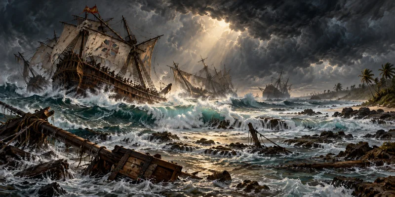
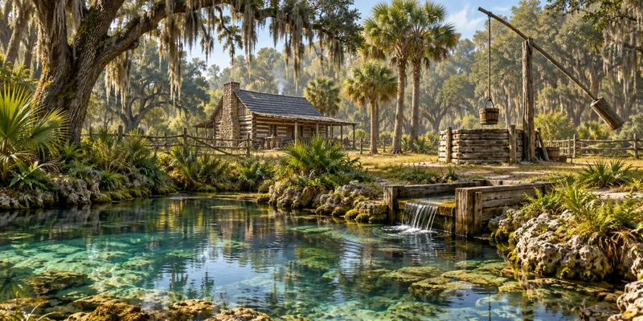
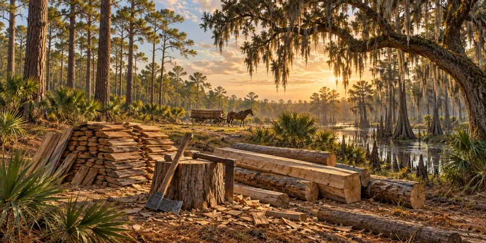

Explore Florida Learning Hub
Discover another side of Florida

Beneath Florida’s waters
Explore the shipwrecks and stories along Florida’s coast.
Read the story
Where fresh water shaped life
Discover the wells and springs that sustained pioneer communities.
Read the story
Building a life on the frontier
Learn how Florida pioneers built with the resources around them.
Read the storyFeatured scenes are AI-generated illustrations, not archival photographs.
Learning Doesn't Stop When the Article Ends
Explore our new and growing collection of guided student journals, instructional workbooks, science investigation resources, STEM design tools, reading and writing resources, and research guides for elementary and middle-grade learners.
Read Florida
Explore free Florida History Minis and feature articles about the people, places, roads, forts, landscapes, cattle culture, and communities that shaped the state.
Browse FLH ArticlesMary Lee Graham Opens a Door in Key West's Business Leadership
1953 — Mary Lee Graham became the first woman elected president of the Key West Chamber of Commerce.
Read: Mary Lee Graham Opens a Door in Key West's Business Leadership